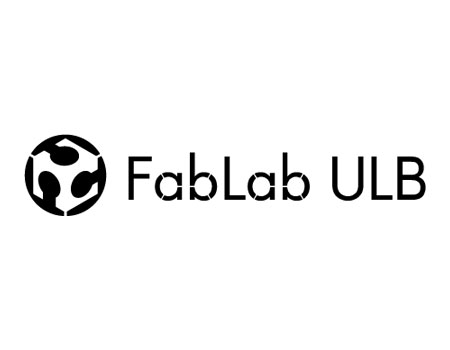

Adiabatic engineering
Branding exercise for my designs relative to physics engineering, metrology, and numerical calculus tools.
FabZero - Fabacademy : The junkyard science project
Made during the 2020-2021 academic year, low-tech approach and fablab approach to scientific tooling. PoC work, where you can find in-depth information here.
|  |
OpenCyclotron (coming summer 2021)
 |